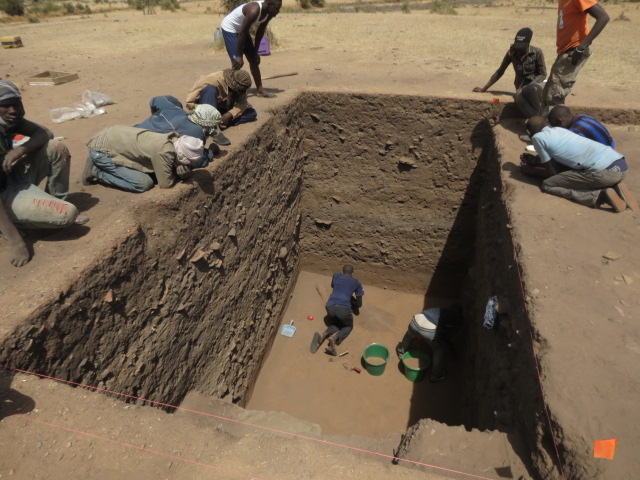

Peter Coutros
Diallowali: Trade and Exchange throughout the Sahara
In what is now the parched landscape of northern Senegal, where sandstorms sweep across the landscape, and temperatures routinely reach 104°F (40°C), diverse bands of environmental refugees once found asylum beginning around 1000BC. Escaping the harsh, arid conditions rapidly developing farther north, these agro-pastoralists established small, isolated villages along the lush Senegal River. Over the next 2000 years, these villages grew into towns and eventually cities. Trade and exchange were important factors in the growth of these sites, as it was through the import and export of materials and objects including beads - that interregional relations developed.
Led by Yale University PhD. Candidate Peter Coutros, the Diallowali Archaeological Research Expedition (DARE) began intensive research in 2014 outside of the remote Sahelian town of Dagana. Excavating almost 13 feet (4 meters) into stratified habitation deposits the team has recovered evidence for a long-term occupation including hunting, fishing, tool making and the production of beautifully decorated ceramics. From within these contexts a diverse range of beads made from bone, marine shell, ostrich eggshell, ceramics and semiprecious stones were collected dating back to 1000BC.
By exploring this understudied region of West Africa, DARE has drastically improved our knowledge of long distance contacts across the Sahara and Sahel (as in the semiprecious stones from the central Sahara and marine shells from the coast), changes in prehistoric ecosystems (the presence of ostrich eggshell), as well as practices of ritual and patterns of personal adornment.
